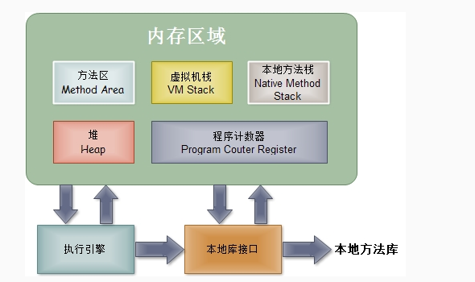
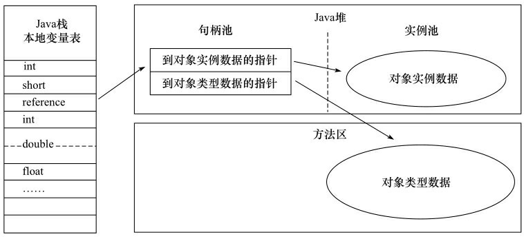
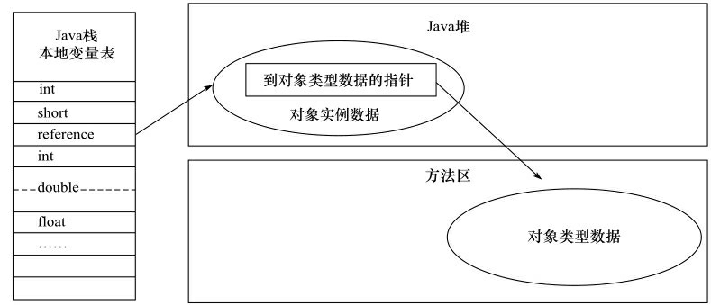

前言
最近第七次拜读《深入理解Java虚拟机:JVM高级特性与最佳实践》，每次读都有不同的收获，为了以防自己读后忘记，同时为了加深理解，准备写一系列JVM相关文章。能力有限，文中大部分内容均由本人整理总结自《深入理解Java虚拟机:JVM高级特性与最佳实践》，文中出现错误的地方请见谅。
JVM内存区域
对于c、c++程序员而言，需要手动去管理自己创建对象所占用内存的销毁。而对于Java程序员而言，虚拟机帮你完成了这部分工作。Java虚拟机在运行时会将它所管理的内存划分为若干个不同的数据区域，我们一般把这叫做JVM的内存模型。
JVM运行时内存区域可分为：虚拟机栈、本地方法栈、程序计数器、方法区、堆；其中虚拟机栈、本地方法栈和程序计数器为线程安全区域，而方法区和堆为线程不安全区域；如下图所示：

虚拟机栈
顾名思义，虚拟机栈是用于供程序使用的栈内存，它的生命周期与线程相同，虚拟机栈会在每个方法执行时创建一个栈帧，栈帧中存储着局部变量表、操作数栈、动态连接、方法出口等。当程序运行所需栈内存超过栈的大小虚拟机会抛出StackOverflowError异常，此时可通过JVM虚拟机参数—Xss调整栈大小；当机器可用物理内存小于JVM虚拟机栈所需内存时会抛出OutOfMemoryError异常。笔者在Linux上基于HotSpot虚拟机测得虚拟机栈默认大小为1024kb
其中局部变量表存放着编译期间可知的各种基本数据类型（boolean、byte、char、short、int、float、long、double）、对象的引用、返回地址；局部变量表的大小在编译期间就已经知道了，除64位long和double占用两个局部变量空间（Slot）外，其余均只占用一个局部变量表。方法在运行期间不会改变局部变量表大小。
操作数栈：方法执行中进行算术运算或者是调用其他的方法进行参数传递的时候是通过操作数栈进行的。
动态连接：Class 文件中存放了大量的符号引用，字节码中的方法调用指令就是以常量池中指向方法的符号引用作为参数。这些符号引用一部分会在类加载阶段或第一次使用时转化为直接引用，这种转化称为静态解析。另一部分将在每一次运行期间转化为直接引用，这部分称为动态连接。
返回地址中存放的是方法执行完之后返回地址。
本地方法栈
本地方法栈与虚拟机栈的作用是类似的，不同的是：虚拟机栈是为执行Java方法服务而本地方法栈是为虚拟机使用到的Native方法服务。值得注意的是在sun公司的HotSpot虚拟机上，本地方法栈与虚拟机栈是合并在一起的。
程序计数器
程序计数器可以看作是当前线程所执行的字节码的行号指示器，每个线程都有一个独立的程序计数器，各线程之间互不影响。若线程正在执行一个Native方法，则此时该线程的程序计数器为空。
方法区
方法区用于存储被虚拟机加载的类信息、常量、静态变量、即时编译器编译后的代码等数据。方法区也称之为“永久代”。
值得一说的是，在方法区中有一个运行时常量池（注意我说的是运行时的常量池），对于Java class文件也有一个常量池。运行时常量池是class文件常量池中编译期间生成的各种已知的字面量和符号引用，在class文件首次被虚拟机加载时载入方法区的运行时常量池。运行时常量池具备动态特性，不止只有class文件中常量池才能进入方法区运行时常量池，运行期间也可能将新的常量放入其中，例如String类的intern()方法。另外值得注意的是在JDK1.7之后的HotSpot虚拟机，字符串常量池已不在方法区，而在堆内存之中。
堆
Java虚拟机规范中描述：所有的对象实例以及数组都要在堆上分配内存。也就是说堆主要是存放对象实例的。
堆内存大小可通过-Xms、-Xmx控制大小。JVM虚拟机的垃圾收集器主要活动的区域也是这块区域。对于堆内存还可分为新生代和老年代，其中默认情况下新生代占堆内存大小的三分之一，老年代占堆内存大小的三分之二，可通过参数-XX:NewRatio控制这个比例的大小。对于新生代还可分为Eden区和两个Survivor区其大小比为8：1：1。大内存对象直接分配在老年代，小内存对象分配在新生代Eden中GC一次后“搬移”到Survivor区，在Survivor区存活若干次GC后将会被“搬移”至老年代。关于GC相关的我会在后续文章中详细说明。
Java对象
对象的创建
在Java程序运行时，运行至对象创建指令（new、克隆、反序列化等）时，首先将检查这个指令的参数是否能在常量池中定位到一个类的符号引用，并检查这个符号引用代表的类是否已被加载、解析和初始化。如果没有，必须先执行相应的类加载过程。
类加载检查后虚拟机将为类分配内存，对象所需内存大小在类加载完后即可确定。为类分配内存有两种方式：一是若Java堆中内存是绝对规整的，所有使用中的内存放一边，空闲内存放另一边，中间放着一个指针作为分界点的指示器，分配内存时只需将指针向空闲空间那边移动一段与对象大小相等的距离，这种分配方式称之为“指针碰撞”。另一种是Java堆不是规整的，虚拟机维护了一个队列，队列记录了哪些内存块是可用的，在分配内存时从列表中找一块足够大的空间划分给对象实例，并更新记录，这种分配方式称之为“空闲列表”。
在并发情况下，对象创建的原子性是靠虚拟机通过CAS与失败重试保证的。另外可通过参数-XX:+/-UseTLAB来保证对象创建的原子性，TLAB是每个线程在Java堆中预先分配一块小的内存，称之为本地线程分配缓冲（TLAB）,对象首先在各自线程的TLAB中分配内存，只有当TLAB不够用需要重新分配TLAB时，才会同步锁定。
对象内存布局
对象在内存中存储可分为三块区：对象头、实例数据、对齐填充。
对象头一部分存储对象自身运行时数据（HashCode、GC分代年龄、锁状态标志、线程持有的锁、偏向线程ID、偏向时间戳等），另一部分是类型指针，即对象指向它的元数据的指针，虚拟机通过这个指针来确定这个对象是哪个类的实例。
对象在堆内存的访问定位
Java程序通过栈上reference数据来操作堆上对象实例，reference可能指向堆中的一个句柄池，句柄池中存放着堆中对象实例的地址和方法区中对象类型数据的地址；

reference中也有可能直接存放着堆中实例对象地址，在对象头中存放着方法区对象类型数据地址。对象类型数据笔者认为是虚拟机从磁盘中class文件加载进方法区的对象类型数据。

参考文献
《深入理解Java虚拟机:JVM高级特性与最佳实践》 周志明著
本文首发于我在万达摆地摊's blog，转载请注明来源